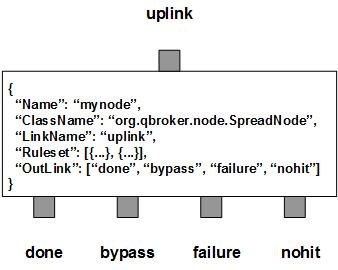

SpreadNode is a message node that process stats data carried by the messages. SpreadNode retrieves data from JMS messages and spreads them according to the predefined rulesets. It filters them into three outlinks: bypass for all the spread messages, nohit for those messages do not belong to any predefined rulesets, failure for the messages failed at the spread operations. SpreadNode will create a set of new messages as the result of the spread operations for each spread message. These new messages go to the outlink of done. Also all the new messages will be in TextMessage. Any incoming messages will go out via one of the three other outlinks.
SpreadNode contains a number of predefined rulesets. These rulesets categorize messages into non-overlapping groups. Therefore, each ruleset defines a unique message group. Ruleset also defines the MaxDuration and the Interval for spread operations. Each group maintains its own data cache and the state. If any data set expires, SpreadNode will create a new TextMessage loaded with the data. The new messages will be flushed out. The flushed messages can be displayed via node based DisplayMask and StringProperty. The number of the data points in cache is tracked by RULE_PEND field. SpreadNode always creates an extra ruleset, nohit, for all messages not hitting any patterns.
SpreadNode also supports checkpointing of the internal data cache. In order to do checkpointing, the CheckpointDir and SAXParser must be defined.
You are free to choose any names for the four fixed outlinks. But SpreadNode always assumes the first outlink for done, the second for bypass, the third for failure and the last for nohit. Any two or more outlinks can share the same outlink name. It means these outlinks are sharing the same output channel.
Apart from the common properties, there are some implementation specific properties for SpreadNode.
| Property Name | Data Type | Requirement | Description | Examples |
|---|---|---|---|---|
| Heartbeat | integer | optional | timeout in second for a session | 300 (default: 3600) |
| CheckpointDir | string | optional | max number of cached groups | 1024 (default: 1024) |
The spread operation is executed via the pre-defined rulesets. Therefore, the configuration of the rulesets is critical to the operations of SpreadNode. Here are complete properties of rulesets for SpreadNode.
| Property Name | Data Type | Requirement | Description | Examples |
|---|---|---|---|---|
| Name | alphanumeric with no spaces | mandatory | name of the ruleset | event |
| MaxDuration | integer | optional | seconds to expire the cache items | |
| Interval | string | optional | type of the requests | jdbc |
| Scale | string | optional | name of the target ruleset | |
| TimeTemplate | string | mandatory | template for the timestamp | ##Count## |
| TimePattern | string | optional | pattern for the timestamp | ##Count## |
| SpreadData | string | optional | template for the cache key | ##Count## |
| PreferredOutLink | alphanumeric with no spaces | mandatory only for bypass | name of the preferred outlink | bypass |
| JMSPropertyGroup | list | optional | list of pattern groups on properties to select messages | see example |
| XJMSPropertyGroup | list | optional | list of pattern groups on properties to exclude messages | see example |
| PatternGroup | list | optional | list of pattern groups on body to select messages | see example |
| XPatternGroup | list | optional | list of pattern groups on body to exclude messages | see example |
| StringProperty | map | optional | for logging of message properties | see example |
| DispalyMask | integer | optional | mask to display new messages | see example |
{
...
"Ruleset": [{
"Name": "bypass",
"PreferredOutLink": "done",
"JMSPropertyGroup": [{
"JMSType": "^score$"
}]
}],
...
}
where it sends the messages to the outlink of done without processing them.
Here is an example of SpreadNode:
{
"Name": "node_spread",
"ClassName": "org.qbroker.node.SpreadNode",
"Description": "spread messages",
"Operation": "spread",
"LinkName": "spread",
"Capacity": "128",
"DisplayMask": "2",
"Debug": "1",
"Heartbeat": "30",
"CheckpointDir": "/var/log/qbroker/checkpoint/STATS",
"StringProperty": {
"type": "",
"hostname": "",
"LogTime": ""
},
"Ruleset": [{
"Name": "tape",
"JMSPropertyGroup": [{
"type": "^tsm_trace$"
}],
"MaxDuration": "3600",
"Interval": "60",
"Scale": "1000",
"TimeTemplate": "##LogTime## 2010",
"TimePattern": "MMM d HH:mm:ss yyyy",
"SpreadData": [{
"DataField": "RBytes",
"DurationField": "RTime",
"CountField": "RCount"
},{
"DataField": "WBytes",
"DurationField": "WTime",
"CountField": "WCount"
}],
"StringProperty": {
"type": ""
}
}],
"OutLink": [{
"Name": "merged",
"Capacity": "256",
"partition": "0,64"
},{
"Name": "null",
"Capacity": "128",
"Partition": "0,64"
},{
"Name": "failure",
"Capacity": "256",
"Partition": "128,16"
},{
"Name": "nohit",
"Capacity": "256",
"Partition": "128,16"
}]
}